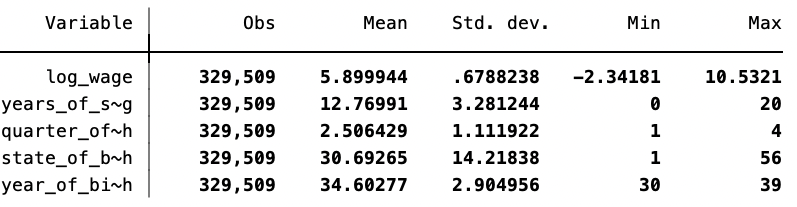
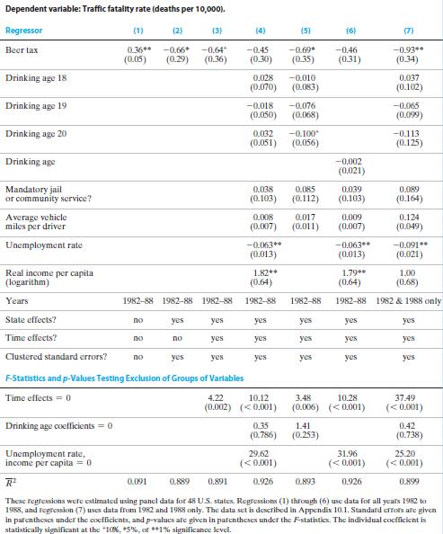
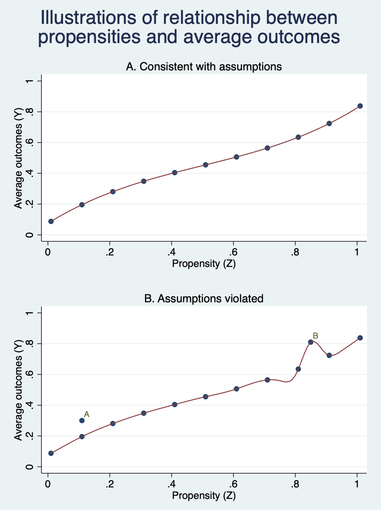

工具变量法
正如第五讲所述，一项经验研究可能存在的主要问题：遗漏变量偏误、变量测量误差、反向因果、模型设定错误、样本选择偏误、异方差和序列相关。第四讲和第六讲分别呈现了消除某种遗漏变量偏误的方法——多元回归和面板数据模型。多元回归应对遗漏变量数据可用情形；面板数据模型引入个体固定效应和时间固定效应来消除遗漏变量数据不可用，且截面或时间单一维度变化时的遗漏变量偏误。
一来，上述两种解决方法均相当于在回归模型中增加核心解释变量(\(X_{it}\)) 以外的自变量(\(Z_{it},\alpha{_i},\gamma{_t}\))；二来，变量测量误差和反向因果所引起的问题，并不能由多元回归和面板数据模型直接解决。那么，除此之外，还有没有其他方法来解决遗漏变量偏误、变量测量误差、反向因果问题呢？
工具变量(Instrumental variables,IV)回归就是获得X与u相关的总体回归函数未知系数一致估计量的一种常用方法。IV的核心思想：把核心解释变量X 的变动分解成两个部分：一个部分与误差项u相关，另一个部分与误差项u不相关。如果我们有资料、数据、信息来分离出第二部分，那么，我们就可以只关注于误差项无关的第二部分，丢弃引起OLS估计偏误的第一部分。这些表征X变动，且与u不相关的数据信息可能来源于一个或多个其他变量，这些变量就称为工具变量(IV)。 如字面意思，这些变量被作为工具来分离出X中与u无关的部分，从而确保回归系数估计量具有一致性。
下面，详细阐述工具变量法的作用原理及其应用。
一元回归与单工具变量
下面，我们来看看工具变量法的“神奇”。如果我们有一个有效的工具变量\(I\)，那么，我们就可以利用工具变量估计量来估计出X对Y的效应。让\(Y\)表示结果变量，\(X\)表示处理变量，\(C\)表示混淆因子，那么回归模型为 \[\begin{equation} Y_i=\beta_0+\beta_1X_i+\beta_2 C_i+u_i \end{equation}\]
现在的问题是，我们手头并没有\(C_i\)的数据，因此，我们能运行下列回归方程： \[Y_i=\beta_0+\beta_1X_i+v_i\] \[v_i=\beta_2 C_i+u_i\] 因为\(C_i\)是混淆因子，\(Cov(X_i,v_i) \neq 0\)。例如，在教育对收入的效应评估中，个人能力与教育有关，如果我们遗漏了个人能力，得到的回归系数就会由于遗漏变量而产生偏误。
下面，见证“奇迹”的时刻到了！
因为工具变量\(I_i\)仅仅通过处理变量\(X_i\)与结果变量Y产生联系，这也就意味着\(Cov(I_i,v_i)=0\)，否则就会有第二条路径出现。这个时候，我们可以写出下式： \[Cov(I,Y)=Cov(I,\beta_0+\beta_1X_i+v_i)=\beta_1 Cov(I,X)+Cov(I,v)=\beta_1 Cov(I,X)\] 上式两边同时除以工具变量的方差\(Var(I)\)，得到： \[\beta_1=\frac{Cov(Y,I)/Var(I)}{Cov(X,I)/Var(I)}=\frac{缩减形式系数}{一阶段系数}\]
注意，分子是结果变量Y对工具变量I的回归系数，即I对Y的影响。它通常被称为“缩减形式系数”。分母则是处理变量X对工具变量I的系数，即I对X的影响。它被称为“一阶段系数”。
它还有一种偏导数的形式： \[\beta_1=\frac{\frac{\partial Y}{\partial I}}{\frac{\partial X}{\partial I}}=\frac{\partial Y}{\partial I}\times \frac{\partial I}{\partial X}=\frac{\partial Y}{\partial X}\]
这个公式真的是简洁明了，它就像在说：哥们，你们真的好难啊，找不到处理X对Y的影响啊，因为存在不可观测的混淆因子啊。所以看过来看过来，你看我，我很容易就能找到I对Y的效应，因为没有任何因素同时影响I和Y（排他性约束）。然后，我用I对X的效应来调整I对Y的效应大小，进而转换得到你们感兴趣的X对Y的效应。
教育对收入的效应：出生季度作为工具变量
下面，我们来看一个有趣的工具变量的例子：美国义务教育法。通常，小孩子在一月一日满了6岁才能到小学读书。由于这个法律限制，那些在年初出生的小孩子进入小学的年龄会偏大一岁。与此同时，义务教育法规定，16岁的青少年不能接受义务教育。这就出现一个现象，在一年的后期（例如第四季度）出生的孩子接受教育的年限通常高于在一年早期（例如一季度）出生的孩子。
下面，我们使用来自Matheus Facure Alves(2022)的数据集——也是Angrist and Krueger（1991）的经典文献的IV数据集。这套数据集包含了对数工资log_wage——结果变量，受教育年限years_of_schooling——处理变量。同时，还包含出生季度quarter_of_birth——工具变量，出生年份和出生地。
* Stata代码
insheet using /Users/xuwenli/Library/CloudStorage/OneDrive-个人/DSGE建模及软件编程/教学大纲与讲稿/应用计量经济学讲稿/python-causality-handbook/causal-inference-for-the-brave-and-true/data/ak91.csv
sum log_wage years_of_schooling quarter_of_birth state_of_birth year_of_birth
如果\(corr(X_i,u_i)\neq0\)，OLS估计量就是非一致的。我们就可以用工具变量\(I_i\) 来分离出\(X_i\)中与\(u_i\)无关的部分。
依据是否与误差项u相关，可以把变量划分成内生变量和外生变量，前者与误差项相关，后者与误差项无关。这两个名字可以追溯至多方程模型，即“内生变量”由模型内决定，“外生变量”由模型外决定。这两个变量在后面的DSGE模型中还会见到。
有效的工具变量必须同时满足两个条件：
（1）工具变量相关性条件：\(corr(I_i,X_i)\neq0\)
（2）工具变量排他性条件：\(corr(I_i,u_i)=0\)
工具变量相关性表明一个工具变量的变动与X的变动相关。工具变量外生性表明工具变量抓住了X中外生变化的部分。这两个条件对于工具变量回归非常重要。
两阶段最小二乘TSLS
两阶段最小二乘(TSLS)是用来估计IV估计量的方法。正如该方法的名字所述，IV估计量是通过两个阶段计算出来的。
第一阶段，把X分解成两个部分：可能与误差项相关的部分和与误差项无关的第二部分。
具体来说，第一阶段用X对工具变量I回归： \[\begin{equation} X_i=\pi_0+\pi_1I_i+v_i \end{equation}\]
公式（2）就把X分解成：\(v_i\)和\(\pi_0+\pi_1I_i\)。由于\(I_i\)是外生的，因此，\(\pi_0+\pi_1I_i\)与\(u_i\)无关，而剩下的\(v_i\)与\(u_i\)相关。据此，我们可以用样本数据估计出\(\hat{\pi}_0,\hat{\pi}_1\)，然后从OLS回归中得到X的预测值\(\hat{X}_i=\hat{\pi}_0+\hat{\pi}_1I_i\)。
第二阶段，利用与误差项无关的第二部分估计\(\beta_1\)。也就是说，\(Y_i\)对\(\hat{X}_i\)回归，利用OLS估计系数，进而得到TSLS估计量，\(\hat{\beta}_0^{TSLS}、\hat{\beta}_1^{TSLS}\)
I. 香烟需求
下面，我们使用美国48个州1985-1995年的香烟销售相关数据。我们用这些数据来估计香烟的需求弹性。工具变量——销售税：来自于一般销售税中对烟草征收的税。香烟消费量，\(Q_i^{cig}\)，是第i 个州人均消费香烟包数。价格，\(P_i^{cig}\)，含税实际平均价格。
在进行TSLS之前，大家首先要关注工具变量是否有效，也就说，我们选择的工具变量是否满足前面的两个条件——相关性和外生性。后面，我们会详细给出如何通过统计工具来检验工具变量的有效性。在此之前，我们先来看看这销售税是否能作为一个有效的工具变量。
首先，工具变量相关性。销售税越高，香烟的税后价格也会越高，那么，销售税与香烟价格具有相关性；
其次，工具变量外生性。一般来说，销售税在各州之间是不同的，但是这种差异并不主要由香烟需求决定，而是由于政治考虑。因此，我们也可以认为销售税是外生的。
根据上述TSLS的两个阶段，用1995年的48个州的数据，我们先来看看第一阶段回归： \[\begin{equation} \tilde{ln(P_i^{cig})}=4.62+0.31SalesTax_i \end{equation}\] 回归结果均在1%下显著，而且如经济理论预测的，销售税越高，税后价格就越高。回归方程的\(R^2=0.47\)，也就睡说，销售税变化解释了47%的香烟价格变动。
在第二阶段中，用\(ln(Q_i^{cig})\)对\(\tilde{ln(P_i^{cig})}\)来进行回归。回归结果是 \[\begin{equation} \tilde{ln(Q_i^{cig})}=9.72-1.08\tilde{ln(P_i^{cig})} \end{equation}\] 也就是说，第一阶段的预测值\(\tilde{ln(P_i^{cig})}\)，被用作第二阶段的回归量。但是，软件中输出的结果是\(ln(P_i^{cig})\)，而不是\(\tilde{ln(P_i^{cig})}\)。因此，TSLS估计为 \[\begin{equation} \tilde{ln(Q_i^{cig})}=9.72-1.08ln(P_i^{cig}) \end{equation}\]
TSLS的估计结果显示，香烟的需求弹性是富有弹性的：价格提高1%，香烟需求量下降1.08%。
从第四、五、六讲我们可以知道，上述估计结果可能存在遗漏变量偏误。
IV回归
在一般化的IV回归模型中，主要包括四种类型的变量：被解释变量Y；内生解释变量X；外生解释变量W；工具变量I。一般来说，可能存在多个内生解释变量，多个外生解释变量和多个工具变量。
回归系数是恰好识别，如果工具变量与内生解释变量一样多；
回归系数是过度识别，如果工具变量比内生解释变量还多；
回归系数是识别不足，如果工具变量比内生解释变量还少；
需要注意的是：IV回归中，至少要有与内生回归因子（内生解释变量）一样多的工具变量。
在IV中包含外生变量或控制变量是为了确保工具变量与误差项不相关。
【小贴士】（以下内容来源于“SociologyOfDrink"微信公众号2018-01-05期张友浪”控制变量是否越多越好）控制变量一般没有因果解释，但控制变量又很重要，那么，怎么选择控制变量呢？一般来说我们只需控制能够同时影响解释变量和被解释变量的变量（confounder）。但是，我们在投稿时经常会收到审稿人的意见，说这个没有控制那个也没有控制。或者自己有意无意的在回归中包含了过多的控制变量。而控制变量过多往往会造成模型损失自由度，模型不够简洁，模型过度拟合，甚至会让我们得出错误的结论。这些问题在小样本回归中尤为严重。因此，我们在回归时，真正要考虑的是，什么样的变量不需要被控制？
根据某一备选变量在因果关系中的位置，可以分以下几种情况讨论：
（1）既不影响解释变量，也不影响被解释变量。很多社会经济变量不仅仅因为常见，而被人们要求加入模型。但如果没有可信的理论来支撑对解释变量和被解释变量的影响的话，不应将其纳入模型；
（2）只影响解释变量的变量。这类变量与关键解释变量没有直接影响，不影响我们对解释变量影响的估计，当然无需纳入模型中控制；
（3）只影响被解释变量的变量。这类变量与关键解释变量不存在理论上的相关性，不会造成遗漏变量偏误，无需控制；
（4）被解释变量影响，又影响解释变量的变量，即中介变量（mediator）。考虑到我们的关键解释变量对被解释变量的影响往往是通过一个或多个渠道（因果链条可无限细分），这时就要分两种情况做决定：如果该中介变量处在我么假设的因果链条中，那就应该将其去掉，因为加入这个变量会让解释变量的影响从全部影响减弱为直接影响，而间接影响则被中介变量吸收，从而削弱了我们对解释变量整体效应的估计；如果该中介变量并不处在我们假设的因果链条中，那就应该保留，这时对自变量影响的估计就会自动排除竞争性解释的影响，有助于提高估计结果的可信度；
（5）当然，有时候，会遇到审稿人搞不清因果关系，坚持要求加入某个变量来控制。考虑到硬怼审稿人没什么好下场，因此建议，审稿人说什么就是什么，听从他们的意见，控制审稿意见要求的变量。
TSLS
当回归方程中只有一个内生解释变量X和多个外生变量时，回归方程为 \[\begin{equation} Y_i=\beta_0+\beta_1X_i+\beta_2W_{1i}+\cdots+\beta_{1+r}W_{ri}+u_i \end{equation}\]
如前所述，X可能与误差项相关，W则不与误差项相关。
根据前文TSLS的两个阶段。在第一阶段中，用X与所有的外生变量——外生解释变量W和工具变量I进行回归。 \[\begin{equation} X_i=\pi_0+\pi_1I_{1i}+\cdots+\pi_mI_{mi}+\pi_{m+1}W_{1i}+\cdots+\pi_{m+r}W_{ri}+v_i \end{equation}\]
在TSLS的第二阶段，先用（7）式估计的\(\tilde{X}_i\)来替代（6）式中的X，然后进行OLS估计。由此，得到的\(\beta_0,\beta_1,\cdots\)就是TSLS的估计量。
【小贴士】
1、在进行第一阶段回归时，除了工具变量外，所有的外生变量（或控制变量）都需要包含在其中。而第二阶段回归也需要包含这些外生变量。
2、当有多个内生解释变量时，第一阶段的工具变量回归是每个内生解释变量分别与它对应的工具变量进行回归，然后再将所有的估计值放入第二阶段回归中得到TSLS估计量。
例子：香烟需求
在第一节的香烟需求例子中，我们只估计了单变量。但是这可能会存在遗漏变量偏误，例如，州的收入水平可能既影响香烟需求，也影响销售税。那么，这还会使得工具变量外生性条件不被满足。因此，下面，我们在回归中包含州的收入水平。TSLS的估计结果为 \[\begin{equation} \tilde{ln(Q_i^{cig})}=9.43-1.14ln(P_i^{cig})+0.21ln(Inc_i) \end{equation}\]
上面的回归系数的标准误为0.37，是恰好识别，也就是说单一内生解释变量对应单一工具变量。除了销售税作为工具变量之外，还可以使用州的烟草特种税。因此，这种税是第二种可能的工具变量。烟草特种税（CigTax）提高会增加香烟的价格，因此满足相关性条件，如果它与误差项无关，那么它也满足外生性条件。下面，我们用两个工具变量来重新进行TSLS 估计，估计结果如下： \[\begin{equation} \tilde{ln(Q_i^{cig})}=9.89-1.28ln(P_i^{cig})+0.28ln(Inc_i) \end{equation}\] 上述两个IV的估计系数标准误为0.25，比较（9）式和（8）式的标准误，我们可以看出，（9）的标准误比（8）下降了三分之一左右。这是因为（9）式利用了更多的信息，两个IV解释了更大的价格变动。
那么，上述IV估计结果可信吗？很遗憾，我们不能立马回答上述问题，因为可信度依赖于IV是否有效。因此，IV有效的两个条件——相关性和外生性就必须要被检验。
如何检验IV的有效性
我们仍然用美国48个州的1985-1995年的香烟销售数据。我们来估计长期价格弹性，因此用十年的的数据来进行回归，例如，我们用香烟销售量的对数之差\(ln(Q_{i,1995}^{cig})-ln(Q_{i,1985}^{cig})\),价格的对数之差\(ln(P_{i,1995}^{cig})-ln(P_{i,1985}^{cig})\)和收入的对数之差\(ln(Inc_{i,1995}^{cig})-ln(Inc_{i,1985}^{cig})\)。两个工具变量是\(SalsTax_{i,1995}-SalsTax_{i,1985}\)，\(CigTax_{i,1995}-CigTax_{i,1985}\)。
结果呈现在图1中，每一列都是不同的回归，都是用TSLS估计量，唯一的差别是工具变量不同。第一列是只包含销售税这个工具变量；第二列是只包含烟草税这个工具变量；第三列是包含两个工具变量。从图1中的结果可以看出，三列结果的第一行均在5%水平下显著为负。但这个结果可信吗？这依赖于我们使用的工具变量是否有效。

（I）我们首先来看看，工具变量的相关性。
工具变量相关性的作用类似于“样本规模的作用”。因为工具变量与内生解释变量越相关，说明IV回归中包含X的信息越多，TSLS估计量越准确，这就类似与样本量越大，估计结果 越准确。
工具变量解释X变动的部分较少时，这种工具变量成为弱工具变量。在上面的例子中，如果选取香烟生产企业到州的距离作为工具变量，这可能就是一个弱工具变量。尽管这个距离越远，香烟的销售价格越高，但是香烟较轻，运输成本可能在其价格中并不是主要组成部分，因此，距离的变动很可能只能解释价格变动中的一小部分。因此，生产距离可能就是一个弱工具变量。那么，如何检验一个工具变量是否是弱工具变量？如果是弱工具变量，我们应该怎么处理？
上面已经说过，工具变量的作用类似于大样本的作用。如果存在弱工具变量问题，正态分布就不是TSLS估计量抽样分布的良好近似，那么，TSLS估计量就不再可信。那么，工具变量相关性程度有多大才是一个良好的分布近似呢？这个答案很复杂，但是幸运的是，我们在实践中有一些经验规则可用：
检验弱工具变量的经验规则：当只有一个内生解释变量时，检验弱工具变量的方法就是计算TSLS第一阶段的F统计量。第一阶段F统计量为包含在工具变量中的信息提供了一个不错的测量指标：包含的信息越多，F统计量越大。经验规则是；如果第一阶段F统计量大于10，不存在弱工具变量；如果小于10，可能就是弱工具变量。
我们从图1中可以看到，三个TSLS的回归结果中，一阶段F统计量分别为33.7,107.2和88.6，因此，我们选择的工具变量不是弱工具变量。
那如果上面的一阶段F统计量小于10，也就是说存在弱工具变量，我们该怎么办呢？
如果存在弱工具变量，且有一些工具变量比另一些更弱。那么，就应该舍弃那些最弱的工具变量。当我们放弃一些弱工具变量时，TSLS估计量的标准误可能会变大，但是 请记住“原始标准误没有任何意义”！
但是，如果系数恰好识别，也就是一个内生解释变量，只有一个工具变量，且是弱工具变量时，我们就不能舍弃这个弱工具变量了。即使在过度识别时，没有足够的强工具变量来取得识别效果，舍弃弱工具变量也不会有任何帮助。这种情况下，我们可以干两件事：
（1）去寻找其他的更强的工具变量。说起来容易，做起来难！这需要我们对所研究的问题有足够的认识，并且能重写设计和收集相关数据。
（2）仍然使用弱工具变量，但是估计方法不用TSLS，而用其他估计方法，例如有限信息极大似然（LIML）估计量。
（II）工具变量外生性
如果有一个内生解释变量，多个工具变量，那么，我们可以计算出多个TSLS估计量（每个工具变量计算一个）。假设有两个工具变量，那么，我们计算的两个TSLS估计量不同。但是如果两个工具变量都是外生的，那么，它们会十分接近。如果我们估计的两个TSLS估计量差异非常大，那么，我们就要非常警觉：要么其中一个工具变量不是外生的，要么两个都不是外生的。在过度识别情形下，过度识别限制检验（J统计量）就是在对多个工具变量TSLS估计量进行比较。
总之，在过度识别情形下，我们能计算出多个TSLS估计量，然后比较它们是否接近，即通过stata计算出J统计量。如果是精确识别情形，我们就不能比较，实际上，这个时候的J统计量为0。
从图1中可以看出，（1）列和（2）列只有一个工具变量，因此，不存在J统计量。而在第（3）列中，有两个工具变量，是过度识别情形，因此，可以计算J统计量，其结果为4.93，它服从卡方分布，5%的临界值为3.84，因此，它在5%的水平下拒绝两个工具变量都是外生的假设。这是因为两个工具变量的TSLS估计量差异很大。J统计量拒绝原假设意味着第（3）列的估计是基于无效的IV估计，因为IV外生性条件不满足。那么，这是否就意味着我们估计的三个结果都不行呢？J统计量拒绝原假设只意味着两个工具变量中至少有一个是内生的，那么，我们可以推断：第一，销售税是外生的，烟草税不是，那么，（1）中的结果就是可靠的；第二，烟草税是外生的，销售税不是，那么,（2）中的结果是可靠的；第三，两个都不是外生的，那么，三个结果在统计意义上都可靠。
千万要记住：统计证据并不能告诉我们哪一种可能是正确的，因此这就需要我们根据我们的经验以及经济理论去argue。
异质性处理效应的IV估计量
哪里去寻找有效的工具变量呢？
在实践中，IV回归最难的就是找到有效的工具变量。虽然如此，但是还是有两种指导性的方法：
（I）遵循经济理论来找工具变量。例如，IV回归的发明者P. Wright（1928）通过他对农业市场的理解，使他认识到所寻找的IV不是使需求曲线移动，而是使供给曲线移动，因此，他就想到用农业地区的天气条件作为有效IV。经济理论法最成功的领域就是金融经济学。在这个领域，有一些投资者行为的经济模型通常是非线性的，此时，不能使用IV估计。因此，将IV方法扩展到非线性模型时，这种扩展方法就是广义矩估计（GMM）。但是经济理论太抽象，并不总是能找到一个有效的IV。
（II）构造工具变量。从这种视角出发，我们要去寻找那些引起内生解释变量变化的随机事件，从这些随机事件中剥离出X变动的外生冲击。
“连享会”微信公众号上有一篇关于寻找工具变量的推文（秦范 (2021)）中写道：
工具变量要满足外生性和相关性两个条件，因此寻找工具变量也一般从满足这两个条件出发。常见的寻找工具变量一般思路如下：
气候、地理等自然因素：降雨等气象因素、地势等地理条件是高度随机的，但也会影响某些经济社会过程，从而能够满足外生性和相关性；
历史因素：过去的历史事件一般与当今的社会经济结果无关；
生理现象：生育双胞胎等现象具有较强的随机性。
使用更高层级的变量作为低层级变量的工具变量：比如，研究个体金融知识与创业选择时，创业概率与金融知识存在反向因果关系，因而金融知识是内生变量。为了克服内生性，作者选用同一个社区其它居民的金融知识平均水平作为个体金融知识的工具变量。但从这一角度寻找工具变量，往往不能完全保证外生性；
内生变量的滞后项。
Stata命令
我们再来看两个两个例子：1、同质处理效应——教育年限对收入的影响；2、异质性处理效应——富尔顿渔业市场的售价对营业额的影响。
教育年限的工具变量：城市是否存在大学
数据和代码来源于Scott Cunningham（2021）：“Causal Inference：The Mixtape”的第七章。而教育年限对收入的影响则是Card（1995）研究的劳动经济学问题。作者设立了一个回归：
\[\begin{equation} Y_i = \alpha +\delta S_i + \gamma X_i +\epsilon_i \end{equation}\]
其中，\(Y\)表示收入对数，S是受教育年限，X是外生协变量矩阵，\(\epsilon\)是误差项——包含不可观测的个人能力，由于能力与受教育年限相关，这就意味着上述估计结果是有偏的。为了解决这个问题，Card（1995）提出用工具变量策略，即用“城市是否存在大学”这个虚拟变量来作为受教育年限的工具变量。
还记得前面的内容反复提到的“自问”吗？此时，我们仍要首先啪啪脑门（注意，只是轻拍，千万不要抓，抓会掉头发的），自问一下：为什么城市是否存在大学这个虚拟变量可以作为受教育年限S的工具变量呢？我能想到的第一个原因就是：父母想把我们留在身边读书。但是，这个答案是否仍然有点牵强。我们再想想，我是武汉人，在武汉上的大学，那个时候家境一般，父母供三个孩子读书，负担还是挺重的，所以在武汉读书也许会减轻家里的学费、生活费、交通费等等负担，因为我就住在武汉。确实，武汉存在大学，所以可能会通过降低了我们继续受教育的成本，进而提高了我们继续读书的可能性——可能增加了受教育年限S。好了，那么，我们就姑且先用这个虚拟变量作为IV来估计上述回归方程的OLS估计量和2SLS估计量，并进行比较。
* Stata代码
use /Users/xuwenli/OneDrive/DSGE建模及软件编程/教学大纲与讲稿/应用计量 ///
经济学讲稿/应用计量经济学讲稿与code/data/card.dta,clear
* 教育年限对工资对数的OLS估计
reg lwage educ exper black south married smsa
* 用“城市是否存在大学”作为受教育年限的工具变量跑2SLS估计
ivregress 2sls lwage (educ=nearc4) exper black south married smsa, first
* 大学和城市变量以及所有协变量对受教育年限的第一阶段回归
reg educ nearc4 exper black south married smsa
* 第一阶段回归的F统计量：IV的排除性
test nearc4表7.1 给出了上述估计结果。从表中可以看出，第二列OLS的回归结果显示受教育年限每增加一年，工资对数会提高7.1%左右，且在1%的置信水平下显著。第三例2SLS的回归结果显示，受教育年限每增加一年，工资对数提高12.4%左右，这个估计结果比OLS还要大。
下面，我们来看看第一阶段的回归结果，列示在“第一阶段IV回归”的“College in the county”行中。结果显示，城市存在大学可以增加0.327年的受教育年限，而且在1%的水平下显著。F统计量也超过了15，这意味着并不存在弱工具变量问题。
在理解受教育年限的收入效应时，有几个问题需要特别注意：我们用城市是否有大学来作为受教育年限的IV，这就意味着我们选择的组群的行为（是否接受教育）会受到IV的影响。换言之，在总体样本中，应该会有部分学生总会去读大学，还有一部分学者就是不想去读大学，这两部分人的教育决策并不受到城市是否有大学的影响。但是，还有第三类群体——他们是否读大学仅仅只因为他们生活的城市有大学。这个时候，实际上我们挑选的研究样本仅仅是那些生活在这个有大学的城市又去读大学的这部分学生。因此，我们估计得到的教育年限对收入的效应并不是总体样本的平均处理效应（ATE），而只表达了一个局部平均处理效应（LATE）。尽管如此，我们上面估计出来的教育对收入的效应（12.4%）仍然非常有意义，至少对于降低低收入家庭的孩子教育成本问题非常有指导价值。
那么，一个自然的问题就出现了：为什么那些受大学影响的孩子的教育收入效应比总体效应（OLS）要大呢？（1）也许遗漏了个人能力？但是受教育越多，能力应该越大，教育收入效应应该更大才对呀。可是上面的结果恰恰相反。（2）受教育年限的测量误差导致了偏误？测量误差会让估计系数趋向于0，而2SLS可以修正这个估计结果。可是人们并不知道他们目前受教育的精确年限，因此，这种解释也很牵强。那么，到底该怎么解释这个结果对比呢？前文说过了，我们进行的工具变量回归是那些生活在有大学城市的孩子们可能会增加他们的受教育年限，这意味着大学降低了他们的边际教育成本。这就是最重要的原因，即更高的边际教育成本会降低了人们的教育投资。但是，实际上，对于这部分人来说，教育的收入效应非常大。
What’s missing for an applied reader is more discussion and a framework on how to critique an IV – for example, he goes through the classic use of quarter of birth as an instrument for years of schooling when looking at impacts of schooling on earnings, where this would be an occasion to think talk through concerns of different types of parents being more likely to have kids at different types of the year. There is no discussion of overidentification tests and how they should be interpreted, nor of sensitivity analysis approaches that allow for some potential violations of the exclusion restriction.
一些提醒
Lewis Caroll（2015）写过一篇博文，名叫《Friends don’t let Friends do IV》。其中写道：
不要用IV回归！如果你非要做，亲爱的如来佛祖啊，请不要用Arellano-Bond类动态面板模型来做IV （它是最差劲的）。
首先，无论你读了什么论文和教材，识别都是一个假设。你不可能证明你的IV是有效的。
其次，无论你读了什么论文和教材，Sargon类型的检验只是为检验过度识别！过度识别！过度识别！而不是检验识别的。你可以说你通过了这个检验，但它仍然不能说明获得有效识别。
第三，即使通过这个检验，也并不意味着在0.05甚至0.1的水平下不能拒绝原假设。
就算你把你的IV解释得天花乱坠，解释到海枯石烂，我还是不相信它们。但是也不要灰心，我们还可以使用DID、匹配、合成控制和断点回归等等（后面会讲解）。虽然这些方法也都有各自的问题，但是它们总归比IV要好点。我的一个合作者曾经也提醒我，尽量还是不要用IV回归吧。
尽管如此，可能有三种IV回归我们还是可以尝试一下，而且这些工具变量设计确实在最近几年的因果推断中变得越来越流行——随机实验IV、法官固定效应（Judge Fixed Effect）IV和Bartik Share-Shift IV。
流行的IV设计
随机实验设计(the lottery design)：抓阄
在IV的应用中，最特别的IV可能就是随机实验。我们先来看一个利用随机实验作为IV的例子：21世纪第一个十年，俄勒冈州的医疗补助计划。这场随机实验有两位经济学家参与其中：一位是来自Harvard的Katherine Baicker（个人主页），另一位是来自MIT的Amy Finkelstein（个人主页）。如果大家去看看她们的个人主页，可能就会发现，她们利用这个实验数据在QJE(2012)、AER(2014)、JPE(2019)、AEJ: EP(2021)等等发了至少7、8篇论文。
21世纪头十年，美国俄勒冈州扩大成年人的医疗补助（Medicaid）计划。凡是19-64岁，收入小于联邦政府贫困线的成年人均可以参与该计划。这个项目被称为俄勒冈健康计划标准（OHPS）。这个计划之所以能发这么多顶刊，最重要的原因就是其具有随机实验的性质，因为俄勒冈州采用了“抓阄”的方法来登记自愿参与人。人们有五周的时间来登记参与该计划。而且参与计划的门槛非常低。随后，俄勒冈州在2008年早期从90000报名者中随机抽取了30000人。这些幸运儿有机会来提交参与医疗补助计划的申请，如果申请被批准，他们需要在45天内回复确认，那些这些人的整个家庭都可以获得医疗补助。最后，只有10000人实际参加了该计划。
这个实验的数据非常丰富(数据集)，参与该计划的两位经济学家研究了医疗补助计划可能产生的因果效应，例如，福利效应（Finkelstein et al.，2019，JPE）、对投票率的影响（Baicker and Finkelstein，2019，QJPS）、对劳动力的影响（Baicker et al.,2014,AER）、对急诊的影响（Baicker et al., 2014,Science）、临床诊断的影响（Baicker et al., 2013, NEJM）、医疗保健使用、财务负担、低收入成年人的健康等等的影响（Finkelstein et al.，2012，QJE）。
作者使用了IV研究设计。当然，在她们的研究中，有时候使用OLS估计，有时候使用2SLS。2SLS模型为：
\[\begin{equation} \begin{aligned} \text { INSURANCE }_{i h j} &=\delta_{0}+\delta_{1} \text { LOTTERY }_{i h}+X_{i h} \delta_{2}+V_{i h} \delta_{3}+\mu_{i h j} \\ y_{i h j} &=\pi_{0}+\pi_{1} \hat{INSURANCE}_{i h}+X_{i h} \pi_{2}+V_{i h} \pi_{3}+v_{i h j} \end{aligned} \end{equation}\]
其中，\(\text { INSURANCE }_{i h j}\)表示医疗保险，\(\text { LOTTERY }_{i h}\)是一个二值变量——家庭h是否被抽取到，即“抓阄”，是工具变量，\(\hat{INSURANCE}_{i h}\)用IV预测的医疗保险，\(y_{i h j}\)表示结果变量，其它都是协变量、误差项以及系数。表示个体，j表示家庭，h表示结果类型（例如，健康、财务负担）。
下面，我们就来看看Finkelstein et al.（2012，QJE）的主要回归结果。Finkelstein et al.（2012，QJE）在文章的开头就写到：“抓阄”给我们提供了一个使用随机控制实验的框架来研究公共保险效应的机会。医疗保险的研究非常多，但是这些研究面临着一个共同的挑战：如何控制保险者和未保险者之间的不可观测的差异（Levy and Meltzer， 2008），医疗保险随机地分配给人们则可以很好的克服这个问题。Finkelstein et al.（2012，QJE）的研究比较了处理组（“抓阄”挑选的参与人）与对照组（没有参与项目的人）的结果，而且用“抓阄”来作为保险覆盖率的工具变量研究了保险覆盖率的效应。
那么，为什么这个研究设计是有效的呢？
作者们用了一节、两个附录和一张表来详细阐述了实验设计的有效性。尤其是“抓阄”的随机性，甚至用独立的计算机模拟过程来进行验证。他们的第一阶段估计结果如表7.2所示。
从表7.2的第一行的结果可以看出，全样本和信贷报告子样本的第一阶段估计量为0.26，调查问卷子样本的结果为0.29，且均在1%水平下显著。所有的一阶段回归F统计量均大于500。
总之，在许多随机实验中，“抓阄”来随机挑选自愿参与者作为处理组。且控制组的参与者通常并不能接受处理。也就是说，只有那些可以从处理中收益的人才可能接受处理，因此，这种情形几乎总是出现正的选择偏误。如果我们用OLS比较处理组和控制组的均值，我们会获得有偏的处理效应，即使实验是随机的，但是由于非遵从特点也会导致偏误。这个时候，我们就可以利用随机“抓阄”来作为参与处理的工具变量。需要注意的是，此时估计的是局部平均处理效应（LATE）。总而言之，如果仅仅由于人们常常拒绝处理或者参与实验，我们就可以考虑使用“抓阄”这个工具变量，效果出奇地好！
法官仁慈设计（Judge leniency design）
第二个流行的IV研究设计称为“法官仁慈设计”(Judge leniency design)，也被称为“法官固定效应”（Judge fixed effect，JFE）设计。因为这类研究设计最初应用于法官判案，虽然现在的研究主题已经非常广泛，但这个名字仍然沿用至今。“仁慈”设计在近几年越来越受到社会科学定量分析的追捧。
在“法官固定效应”设计中，利用随机分配给一个法官、管理者或者其他决策者外生的任务来识别处理对结果的效应（Frandsen et al., 2019, NBER w25528）。最早利用这一想法的研究是Gaudet, Harris, and John (1933)，他们指出了法官在判决案件时存在系统性差异。第一篇明确提到“法官固定效应”设计的文献是Imbens and Angrist (1994)——假设一个社会项目的申请者由两位官员筛选，且即使基于相同的评选标准，两位官员也可能存在不同的入选率。第一篇经验识别文献是Waldfogel (1995)，而正式、明确使用IV策略的文献则是Kling (2006)——监禁期限对劳动收入的影响，用同一个法官所有判决的平均监禁期限来作为某个犯罪分子实际监禁期限的工具变量。最近几年的研究已经扩展到其他研究领域：监禁期限对经济和家庭结果的效应 (Green and Winik, 2010; Loeffler, 2013; Aizer and Doyle, 2015; Mueller-Smith, 2015; Bhuller et al., 2016; Eren and Mocan, 2017; Arteaga, 2018; Norris et al., 2018; Bhuller et al., 2018; Dobbie et al., 2018b)、法官之间的种族偏差（Arnold et al, 2018）、拘留生产的法律和经济结果(Gupta et al., 2016; Leslie and Pope, 2017; Dobbie et al., 2018a; Stevenson,2018)、消费者破产对家庭金融负担的效应 (Dobbie and Song, 2015; Dobbie et al., 2017)，破产对企业的影响 (Chang and Schoar, 2013)、养育对孩子的影响(Doyle, 2007, 2008；Norris et al.,2020)、残疾对劳动供给、死亡率和代际福利的影响 (Maestas et al., 2013; Dahl et al., 2014; Autor et al., 2017; Black et al., 2018)、专利对创新的影响(Galasso and Schankerman, 2015; Sampat and Williams, 2015)。
当我们在使用“法官固定效应”设计时，我们时刻记住三个主要的识别假设：
独立性假设。在JFE中，独立性假设似乎总是满足的，因为管理者是随机分配各个体的。例如，法官宣判的平均严厉程度这个工具变量就很容易通过独立性检验。但是，即使法官是随机分配给罪犯，也可能存在一部分罪犯采取策略行动来应对法官的严厉程度。有许多方法可以来评价独立性：（1）检验处理前协变量的平衡性（必做）;(2)工具应该使用初始的法官分配，因为初始分配才是随机的，但是在许多实践研究中初始分配的数据可能并不可用，这个时候，我们就应该尝试通过对管理者/法官进行访谈来判断数据中内生分类发生的程度。
排他性约束。这个约束更加需要注意和小心。想象一下，一个犯罪分子随机分配了一个严厉的法官，我们可以预期到罪犯可能面临更高的处罚。这并不是由于其它原因，仅仅是因为更严厉的法官会选择更严厉的惩罚，因此，影响了预期惩罚程度。面对更高的预期惩罚，辩护律师和罪犯可能决定接受较轻的有罪判罚以应对法官的严厉程度。这时候，排他性约束就不成立了——因为排他性要求工具变量仅仅通过法官的判决来影响监禁结果。
单调性假设。在JFE中，满足单调性非常的困难。这是因为这类工具变量要求在所有罪犯之间都类似——一个法官要么总是严厉，要么总是仁慈，而不能因案而异。但是，人类太复杂了，总会或多或少存在一些差异。例如，在美国，一个法官面对黑人或者其它肤色的人时非常严厉，面对白人罪犯则很仁慈。Mueller-Smith（2015）就通过同时工具化所有可观测的判决维度的一种参数化策略来克服排他性和单调性问题。
Frandsen et al.(2019, NBER w25528)提出关于排他性和单调性的一个检验。由于该检验同时测试排他性和单调性，因此，当检验不通过时，我们并不能判断是哪个假设不成立。此时，只能根据我们的理论、经验等先验信息来进行argue。该检验要求：根据法官平均的观测结果是否与法官的平均倾向函数一致。如图7.2所示。

Frandsen et al.(2019, NBER w25528)也给出了Stata命令包testjfe。下面我们来看看stata命令：
* 找到testjfe命令包
findit testjfe
* 加载例子的数据
use http://fmwww.bc.edu/repec/bocode/f/fake_data_for_testjfe.dta,clear
* 命令
testjfe y d _Ijudge*,covariates(x1-x3) generate(eyj pj fit) graph
下面，我们以Stenvenson(2018)的研究为例来看看“法官固定效应”设计的IV应用。数据和代码来源于Scott Cunningham（2021）：“Causal Inference：The Mixtape”的第七章。作者关注于美国费城——保释法官随机分配，且法官对于可负担水平下判决保释的倾向是不同的，更加严厉的法官设定更高的保释金，因此，更多的犯罪嫌疑人不能支付保释金，那么，这些嫌疑人就会持续被拘留。作者发现，随机拘留的增加会导致有罪判决可能性增加13%。她认为这是由于犯罪分子认罪的增加所导致的。拘留也导致了监禁期限增加了42%，非保释金费用提高41%。
Stenvenson(2018)的数据包含331971个观测样本，8个随机分配的保释法官。她用JIVE估计量。虽然大部分经验研究军用IV估计量，但是当存在弱工具变量和使用多个工具变量时，IV估计量会出现有限样本问题。Angrist, Imbens, and Krueger (1999)提出JIVE估计量来减轻2SLS的有限样本偏误。需要注意，JIVE也并不是完美估计量，但是，当使用多个工具变量，并存在弱工具问题时，JIVE有很多优势。
use https://github.com/scunning1975/mixtape/raw/master/judge_fe.dta, clear
global judge_pre judge_pre_1 judge_pre_2 judge_pre_3 judge_pre_4 \\\
judge_pre_5 judge_pre_6 judge_pre_7 judge_pre_8
global demo black age male white
global off fel mis sum F1 F2 F3 F M1 M2 M3 M
global prior priorCases priorWI5 prior_felChar prior_guilt onePrior threePriors
global control2 day day2 day3 bailDate t1 t2 t3 t4 t5 t6
* Naive OLS
* minimum controls
reg guilt jail3 $control2, robust
* maximum controls
reg guilt jail3 possess robbery DUI1st drugSell aggAss $demo $prior $off $control2 , robust
* First stage
reg jail3 $judge_pre $control2, robust
reg jail3 possess robbery DUI1st drugSell aggAss $demo $prior $off $control2 \\\
$judge_pre, robust
** Instrumental variables estimation
* 2sls main results
* minimum controls
ivregress 2sls guilt (jail3= $judge_pre) $control2, robust first
* maximum controls
ivregress 2sls guilt (jail3= $judge_pre) possess robbery DUI1st drugSell \\\ aggAss $demo $prior $off $control2 , robust first
* JIVE main results
* minimum controls
jive guilt (jail3= $judge_pre) $control2, robust
* maximum controls
jive guilt (jail3= $judge_pre) possess robbery DUI1st drugSell aggAss $demo \\\
$prior $off $control2 , robust
表7.3给出了估计结果。用OLS时，在控制时间，拘留对认罪没有显著影响；控制罪犯特征后，拘留会提高3%的认罪概率。当我们使用一个二值性法官固定效应最为IV时，这个效应就变得非常大（0.15-0.21），而且在5%水平下显著。而且我们发现用JIVE估计量，效应更大。
注意：在使用JFE设计时，我们一定要仔细考察独立性假设、排他性约束与单调性假设。关于JFE更多的研究回顾和实践指导，可以参见Mckenzie（2019）：“Judge leniency IV designs: Now not just for Crime Studies”。
Bartik Shift-Share IV
Bartik工具变量，也就是大家熟知的“shift-share”工具变量，得名于Bartik（1991）对区域劳动力市场的研究。但是，Goldsmith-Pinkham et al.(2020，AER)指出，最早使用该思想的研究是Perioff（1957）——产业份额可以用于预测收入水平。而且Freeman（1980）也用产业结构的变化作为劳动需求的工具变量。
Bartik工具变量的核心思想是：用国家层面对不同行业产品需求的变动来测度区域劳动需求的变动。Goldsmith-Pinkham et al.(2020)认为，只要用内生变量的内积结构来构造工具变量，都可以称为Bartik IV。假设，我们想要估计下列回归方程：
\[\begin{equation} Y_{l,t} = \alpha + \delta I_{l,t} +\rho X_{l,t} + \epsilon_{l,t} \end{equation}\]
其中，\(Y_{l,t}\)表示地区l，t期的原居民工资对数，\(I_{l,t}\)表示t期流入地区l的移民，\(X_{l,t}\)是控制变量，包括地区和时间固定效应。\(\delta\)就是我们感兴趣的移民对原居民工资的平均处理效应。问题是，我们几乎可以肯定，移民与扰动项高度相关（Sharpe，2019）。
Bartik工具变量就是l地区的初始移民份额与国家层面的移民增长率进行交乘。一个地区移民增长偏离国家平均增长可以被移民增长预测变量偏离国家层面平均增长所解释。而增长预测变量偏离国家层面的平均增长则是由于份额（shares）变动，因为在某一时期，国家层面的平均增长效应对于所有地区都是一样的。我们可以将Bartik工具变量定义为：
\[\begin{equation} B_{l,t} = \sum_{k=1}^{K} z_{l,k,t^0} m_{k,t} \end{equation}\]
其中，\(z_{l,k,t^0}\)表示来l地区自于k地区的初始\(t^0\)移民份额，\(m_{k,t}\)表示整个国家层面来自于k地的移民变动。第一项是份额（share）变量，第二项是转换（shift）变量。进入l地区的移民预测B就是每个地区流入整个国家的移民的加权平均，权重依赖于初始的移民分布。只要，我们构造了Bartik工具，我们就可以利用2SLS来估计回归——第一阶段用Bartik IV对\(I_{l,t}\)进行回归，然后，用预测移民\(\hat{I}_{l,t}\)对\(Y_{l,t}\)进行回归来识别出移民度原居民工资的影响。
我们在进行IV研究时，通常要花费大量的时间精力和内容来阐述工具的排他性约束。但是，对于Bartik工具来说，论述排他性约束似乎更加的困难，这正是因为涉及到share项和shift项。目前，现有研究也有两个不同的视角——share视角和shift视角——来阐述Bartik工具的识别假设。
Goldsmith-Pinkham et al.(2020，AER)解释了shares视角 。他们显示，当shifts影响第一阶段的强度时，实际上，初始shares就提供了外生变动。那么，在实践中，我们就要花费更多的时间和内容来argue为什么初始shares是外生的。
尽管我们永远也无法证实排他性约束是否成立，但是，至少我们可以仔细考察一下外生性的可信度：
我们可以考察一下解释关键变动的初始份额在初始年份与其他的干扰因素的相关程度。例如，在一个贸易研究中，我们可以看看初始时期有许多计算机制造业的地区是否也有跟更多的教育。
由于存在许多加权工具变量，我们就可以进行过度识别检验——待检验的原假设“恒定的处理效应”，拒绝原假设意味着有一些工具是内生的。
Goldsmith-Pinkham et al.(2020，AER)开发了一个Rotemberg权重的Stata命令包和数据来让我们可以练习一下。
Goldsmith-Pinkham et al.(2020)指出，他们的研究中有两个关键的假设：位置是独立的（没有空间溢出）；数据是由一系列稳态构成的。但是，Jaeger et al.（2018）对第二个假设进行了评论。我们再次考察一下移民对原居民收入的影响：
\[\begin{equation} Y_{l,t} = \alpha + \delta I_{l,t} +\rho X_{l,t} + \epsilon_{l,t} \end{equation}\]
通常，我们都会关心当期因素（例如，本地需求冲击）——影响本地居民工资和移民的因素。Bartik工具变量对于本地需求冲击是外生的。然而，jaeger et al.（2018）指出，如果面对冲击时，市场需要时间调整，那么，误差项\(\epsilon_{l,t}\)就会包含过去移民供给冲击的一般均衡调整效应。此时，Bartik工具变量估计量就会混合短期响应（新移民导致的工资下降）和长期响应（市场调整时间内的正向移民效应）。我们可以在回归中增加移民的滞后项来控制这些动态效应，然后，在跑Bartik工具变量回归：
\[\begin{equation} Y_{l,t} = \alpha + \delta I_{l,t} + \delta_1 I_{l,t-1} +\rho X_{l,t} + \epsilon_{l,t} \end{equation}\]
此时，有两个Bartik工具变量：
\[\begin{equation} B_{l,t} = \sum_{k=1}^{K} z_{l,k,t^0} m_{k,t} \end{equation}\]
\[\begin{equation} B_{l,t-1} = \sum_{k=1}^{K} z_{l,k,t^0} m_{k,t-1} \end{equation}\]
其中，\(\delta\)刻画了短期效应，\(\delta_1\)刻画了过去供给冲击的长期响应。
总之，我们也要考察“调整动态”。
第二个视角就是shifts，这是由Borusyak, Hull, and Jaravel (2021，RES)提出的一个识别框架，并允许shares是内生的，例如，Goldsmith-Pinkham et al.(2020，AER)基于外生的shares。可以从冲击中来进行识别，因为share-shift IV回归系数可以从一个冲击水平的IV估计中获得。BHJ显示许多行业的外生独立冲击可以用来作为Bartik工具来识别因果效应，只要冲击与shares偏误无关即可。
BHJ提供了一个简单的Share-shift IV分类。在一些情形下，使用GPSS的外生shares识别更加合适，但是还要一些情形使用shift识别方法更合适。那么，我们就需要对哪种视角的识别更合适于我们的研究进行更多的先验argue。
Borusyak, Hull, and Jaravel (2021，RES)也开发了一套Bartik 工具变量回归的Stata命令包SSAGGREGATE。
* 安装SSAGGREGATE
ssc install ssaggregate, replace
* 查看帮助文件
help ssaggregate
这个命令可以帮助我们实施shift-share (或者 "Bartik") 研究设计，in which the instrument averages a set of shocks with unit-specific weights measuring shock exposure. For example, a regional instrument is constructed from some industry shocks averaged using local employment shares, as in Bartik (1991) and Autor, Dorn, and Hanson (2013).
Based on Borusyak, Hull, and Jaravel (2021，RES), the command exploits an equivalence result. In the example of regions and locations, the regional shift-share IV coefficient can be identically obtained from a different IV regression estimated in the sample of industries. In this regression the outcome and treatment are first averaged with exposure weights to obtain industry-level aggregates; industry shocks then instrument for aggregate treatment. ssaggregate produces those industry-level aggregates.
The equivalent industry-level representation is useful when identification relies on as-good-as-random assignment of industry shocks (even if local shares are endogenous)—a quasi-experimental framework that may be plausible in many applications where the number of industries is large. The industry-level regression then helps visualize the identifying variation, produce corrected standard errors, test identifying assumptions, optimally combine multiple industry-level shocks, and more (see Borusyak, Hull, and Jaravel 2021).
需要增加的内容：What’s missing for an applied reader is more discussion and a framework on how to critique an IV – for example, he goes through the classic use of quarter of birth as an instrument for years of schooling when looking at impacts of schooling on earnings, where this would be an occasion to think talk through concerns of different types of parents being more likely to have kids at different types of the year. There is no discussion of overidentification tests and how they should be interpreted, nor of sensitivity analysis approaches that allow for some potential violations of the exclusion restriction.